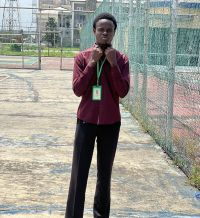

Emmanuel Anietie Atat
About Me

Hello! My name is Emmanuel Anietie Atat. I prefer being addressed as Emmy_Cee. I'm from Akwa Ibom State, Nigeria. I am a tech-savvy individual who stays ahead in the digital world, an observant thinker who notices details others miss, and a curious explorer always eager to learn and innovate. Currently pursuing my studies at BYU-Idaho, I am passionate about web development and creating meaningful digital experiences. My journey in technology has been driven by a desire to understand how things work and to build solutions that make a difference. Beyond coding, I enjoy exploring different cultures, learning new languages, and connecting with people from around the world. I believe that technology should be inclusive, accessible, and used to uplift communities. As I continue my education, I'm committed to mastering web development skills and contributing to projects that have a positive impact.